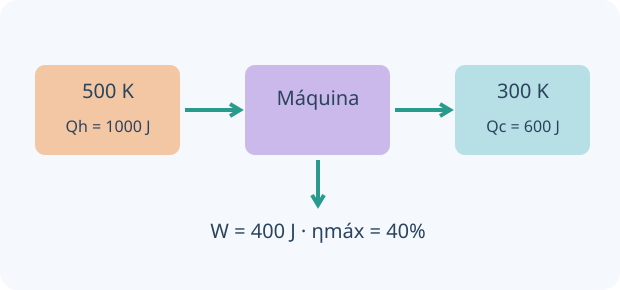

Una idea, un modelo y una experiencia para contrastarlo. Comprobá cada explicación y volvé a intentarlo cuando lo necesites.
0 de 4 lecciones comprobadasAvance guardado en este navegador
Contenidos y correspondencia con el programa
Modelo cinético y ecuación del gas ideal
Procesos P–V y primera ley
Máquinas térmicas y rendimiento
Segunda ley, irreversibilidad, sistemas abiertos/cerrados y entropía
Normas OAF 2022, programa esquemático y contenidos conceptuales/procedimentales, pp. 14–16. Ver fuente y alcance.
01
COMPRENDÉ Y COMPROBÁ
Tu ruta de estudio.
LECCIÓN 1 / 4 · LEÉ, APLICÁ Y COMPROBÁ
Un modelo microscópico para P, V y T
Empezá desde la idea.
Un modelo ideal de gas simplifica las partículas y sus interacciones. Conecta el comportamiento microscópico con presión, volumen, temperatura y cantidad de sustancia. Antes de usar una relación proporcional, elegí qué variables se mantienen constantes y cuáles se dejan cambiar.

Ejemplo del límite reversible de Carnot entre 500 y 300 K. Una máquina real suele tener menor rendimiento.
El gas ideal supone partículas de volumen propio despreciable, sin interacciones salvo choques elásticos. La presión resulta del intercambio de momento con paredes; T absoluta se relaciona con energía cinética media de traslación.
PV = nRT conecta variables macroscópicas. Un sistema cerrado puede intercambiar energía sin intercambiar materia; aislado no intercambia ninguna de las dos. La idealidad es una aproximación que empeora a alta densidad y cerca de condensación.
PV = nRT · R = 8,314 J/(mol·K)
INTENTÁ RESOLVER ANTES DE MIRAR
0,10 mol a 300 K ocupan 0,0020 m³.
Tu desafío: Calculá P en unidades SI y luego en kPa.
Ver el ejemplo resuelto paso a paso
P = 0,10×8,314×300/0,0020.
P ≈ 124710 Pa = 124,7 kPa.
LECCIÓN 2 / 4 · LEÉ, APLICÁ Y COMPROBÁ
Primera ley y trabajo de un gas
Empezá desde la idea.
La primera ley contabiliza energía transferida como calor y trabajo. Elegí y declará un convenio de signos coherente. El estado final del gas no determina por sí solo cuánto calor y trabajo hubo: esas transferencias dependen de la trayectoria.
Adoptamos W positivo cuando el gas realiza trabajo sobre el entorno. Entonces ΔU = Q − W. Al expandirse cuasiestáticamente, W es el área bajo P(V); al comprimirse, W es negativo. Existen otras convenciones, por eso declararla importa.
Para gas ideal, U depende de T. En una transformación isotérmica, ΔU = 0 y Q = W bajo estas condiciones. En un proceso adiabático, Q = 0, pero T puede cambiar: adiabático no significa isotérmico.
Tu desafío: Calculá ΔU y predecí el signo si el gas fuera comprimido sin intercambio de calor.
Ver el ejemplo resuelto paso a paso
ΔU = 500 − 200.
Su energía interna aumenta 300 J.
LECCIÓN 3 / 4 · LEÉ, APLICÁ Y COMPROBÁ
Rendimiento de una máquina térmica
Empezá desde la idea.
Una máquina térmica toma energía de una fuente caliente, entrega parte como trabajo y rechaza otra parte hacia una fuente fría. El rendimiento compara trabajo útil con calor absorbido. La segunda ley impone límites, incluso antes de añadir rozamiento u otras pérdidas.
Una máquina cíclica recibe Qh de una fuente caliente, entrega trabajo W y cede Qc a una fuente fría. En el ciclo ΔU = 0, por lo que W = Qh − Qc. El rendimiento compara trabajo útil con energía recibida, no con energía total intercambiada.
Entre dos reservorios a Th y Tc, el límite reversible de Carnot es 1 − Tc/Th, con T en kelvin. Un motor real opera por debajo de ese máximo bajo las mismas condiciones. Aumentar Th no garantiza cualquier rendimiento si existen límites materiales y pérdidas.
η = W/Qh = 1 − Qc/Qh · ηCarnot = 1 − Tc/Th
INTENTÁ RESOLVER ANTES DE MIRAR
Una máquina recibe 1000 J y rechaza 600 J por ciclo.
Tu desafío: Calculá trabajo y rendimiento; compará con Carnot para Th = 500 K y Tc = 300 K.
Ver el ejemplo resuelto paso a paso
W = 400 J.
η = 400/1000 = 0,40 = 40 %.
LECCIÓN 4 / 4 · LEÉ, APLICÁ Y COMPROBÁ
Irreversibilidad y entropía
Empezá desde la idea.
La entropía permite analizar qué cambios globales son compatibles con la segunda ley. Un sistema puede reducir su entropía si el entorno compensa el cambio. No confundas irreversibilidad con imposibilidad de volver visualmente a una configuración mediante otro proceso que consume recursos.
Los procesos espontáneos de un sistema aislado no disminuyen su entropía total. Calor que fluye de caliente a frío, rozamiento y mezcla son ejemplos irreversibles habituales. Un sistema puede bajar su entropía si la del entorno aumenta lo suficiente.
Para un intercambio reversible isotérmico, ΔS = Qrev/T; una trayectoria reversible equivalente permite calcular cambios entre estados aunque el proceso real sea irreversible. Entropía no es sinónimo de energía perdida ni de desorden visual: limita la disponibilidad de transformaciones y contabiliza estados.
ΔStotal ≥ 0 para un sistema aislado · ΔSisotérmica reversible = Qrev/T
INTENTÁ RESOLVER ANTES DE MIRAR
100 J pasan de un reservorio a 400 K a otro a 300 K.
Tu desafío: Calculá la entropía total y explicá por qué las dos fuentes tienen signos opuestos.
Ver el ejemplo resuelto paso a paso
ΔStotal = −100/400 + 100/300.
ΔStotal ≈ +0,0833 J/K: el proceso es compatible con el segundo principio.
02
PREDECÍ · ARMÁ · MEDÍ · EXPLICÁ
La física en tus manos.
Preparando el laboratorio virtual…
03
LISTO PARA PONER A PRUEBA TU COMPRENSIÓN
Practicá, revisá y volvé a la idea.
Ocho preguntas por unidad, con áreas y niveles seleccionables. La autoevaluación avanza al guardar; al final podés revisar explicaciones y reintentar errores. Es práctica local, no un examen oficial ni un envío al panel docente.